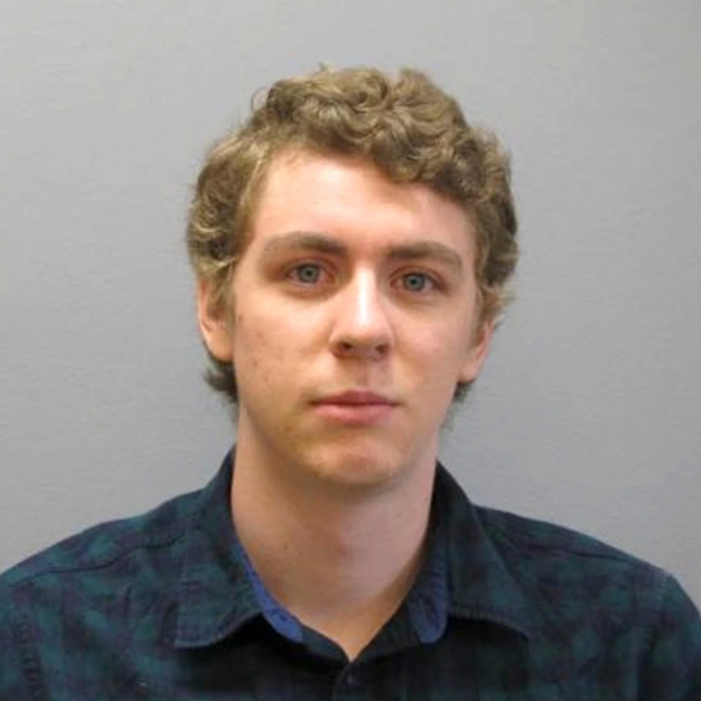
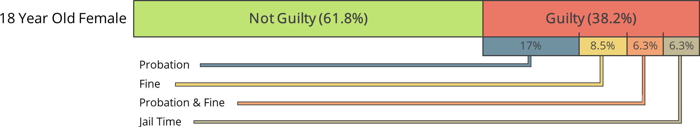
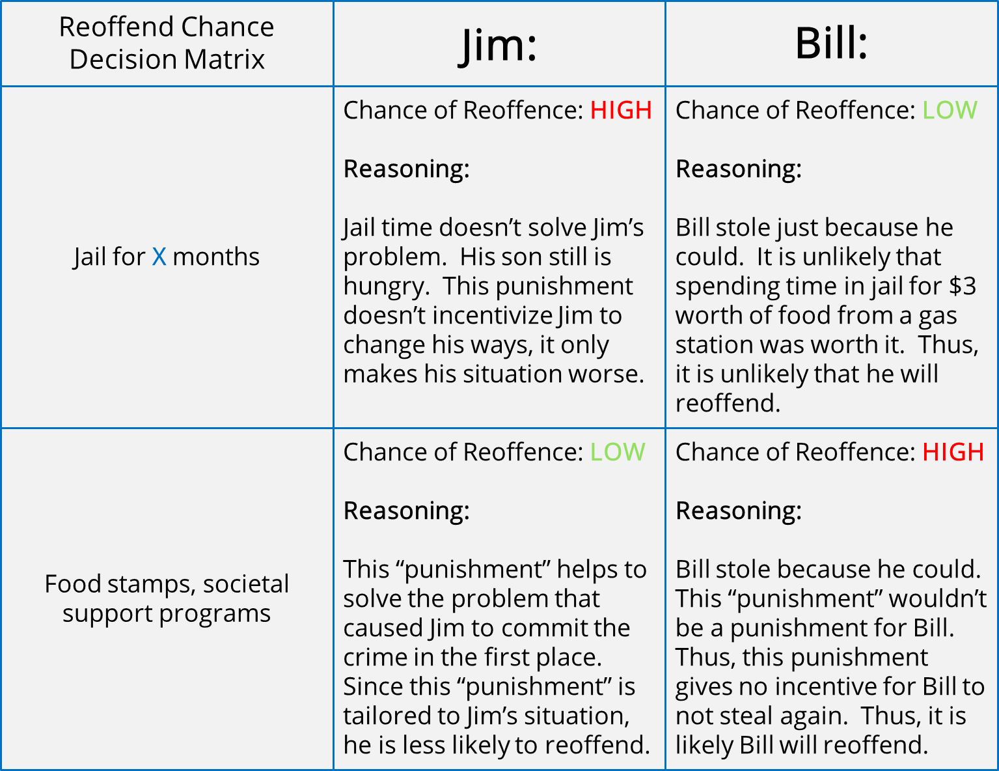

Algorithms Aren't The Solution To A Broken Criminal Sentencing System, At Least Not Yet
By: Nick Karlovich
A major problem within the U.S. Criminal Justice System is the inconsistency and unpredictability of judges and their decisions on what the correct punishment should be for any given crime. There are countless news stories showcasing how some criminals walk away from crimes with extremely lenient punishments, while other criminals with similar cases will be sentenced with punishments that are absurdly harsh in comparison; so much so that you have to wonder if the judges are just picking punishments at random. It should be noted that while unfair and inconsistent punishments can affect anybody, black people are statistically more likely to receive longer prison sentences than their white counterparts.6
To get a sense of what kinds of injustices are handed out every day, here are a few cases where the punishments handed out don't match the crimes committed. These cases are by no means the only examples, they are only a small sample of the inconsistencies that exist in our judicial system as it stands today.
Name: Austin Smith Clem
Crime: Two accounts of rape of a 14-year-old girl, one account of rape of the same woman at age 18.
Punishment: Clem was given 20 years in prison for two of the rape counts and another 20 years for the final charge. However, he was sentenced to probation rather than jail (which meant he only served the time if he broke a much more lenient probation). Clem would be free to live at home but would have to check in with a corrections officer every week, and was not required to register as a sex offender.
Name: Clarence Aaron
Crime: Conspiracy to possess with intent to distribute multiple kilograms of cocaine.
Punishment: Clarence was given three life without Parole (LWOP) sentences at the age of 23 for playing a minor role in two planned large drug deals – one of which did not take place – in which he was not the buyer, seller, or supplier of the drugs. He is still in jail for his charges.

Name: Brock Turner
Crime: Two charges of rape, two charges of felony sexual assault, and one for attempted rape. Pleaded not guilty to all charges.
Punishment: Turner was found guilty (while pleading not guilty) on 3 accounts of sexual assault but was only given 6 months in prison and 3 years of probation. He was also released from his already short prison sentence 3 months early. This was seen by many as an incredible injustice and a complete failing of the court system.
Name: Guy Frank
Crime: Multiple previous offenses, the current offense, stealing 2 shirts, which was considered a felony before 2010.
Punishment: Under Louisiana’s multiple offender law, Frank was sentenced to 23 years in prison, even though he had never committed a violent crime. The Innocence Project New Orleans (IPNO) was able to appeal to the Orleans Parish District Attorney to secure Frank’s release from prison three years early.
But this disparity, this bias in sentencing exists beyond our own experiences, beyond the news cycle that promotes the most extreme injustices and controversies. It has been shown how inconsistent and unpredictable the judicial system can be with its punishments. In a study involving 47 Virgina district attorneys, each judge was given 5 fabricated cases and was told to determine the guilt of the defendant and if found guilty, determine the appropriate sentence. Here are the results of two of those cases as examples:
Case A: Marijuana Presence
Description: An 18-year-old female defendant was apprehended for possession of marijuana. She was arrested with her boyfriend and seven other acquaintances. Evidence of a substantial amount of smoked and unsmoked marijuana was found; however, no marijuana was discovered directly on the defendant's person. She had no previous criminal record, was a good student from a middle-class home, and was neither rebellious nor apologetic for her actions.
How the 47 Judges voted:
This outcome flies in the face of the entire intent of the judicial system! A tenant of the U.S. judicial system is that every defendant is innocent until proven guilty. This is because courts would rather let 10 known criminals go free rather than put 1 innocent person behind bars (Blackstone's Ratio3). It is absolutely ludicrous that if you were in this situation, you would have to roll the celestial d20 (twenty-sided die) and on a 1 (5% ≈ 6.3%) you go to jail, while 12 others get off with a spotless record, purely because fate willed it. These inconsistencies are crazy and unacceptable no matter who is on the receiving end of it.
Case B: Father-Son Theft
Description: Residents of a household returned home to find their television set missing, and, hearing a noise, noticed two persons carrying a large object down the street. Soon afterward, officers arrested a 46-year-old man and his son, who were pawning the TV set, which was identified by its serial numbers. The father, whose fingerprints matched those found in the house, had four previous convictions for petty larceny, one for reckless driving, and one for assaulting a police officer. The son had only one traffic conviction and claimed his father had told him a friend gave him the television set.
How the 47 Judges voted:
Minimum Sentence
Maximum SentenceUse Shift + Scroll wheel to move horizontally
The point to note here is punishment. While all the judges agreed that the father was guilty, the punishments given by the judges have an astonishing amount of variability. The minimum sentence given by the group was a jail sentence of 1 month and a $100 fine. The largest prescribed sentence for the exact same case was 60 months. Regardless of what the "correct" punishment should be, the range of possible jail terms is extremely large, too large for what we should expect and want from our justice system.
These two fictional cases highlight the main issue many people see with the justice system. It is impossible for our judges to view cases in the same way. This creates incredible discrepancies where based on your judge, you could walk free, or be sentenced to jail. And even when the judges agree that you deserve jail time, there is a chasm of difference in the length of the sentence that you could receive.
So, there's an issue between judges, each judge has their opinions and ideas which will influence how they decide on cases. These differences in opinion are impossible to remove from the court system without removing a human judge from the equation entirely and I'm not quite sure we'd want to remove the human element anyways. The "human factor" of a courtroom goes back to the Magna Carta in 1297, which said that a courtroom should exist as a jury of one's own peers (including the judge), not one person reading word-for-word the laws from a book. So, removing the humans from the courtroom entirely is out of the question with current technologies and due to human nature, it is unlikely that we will see any changes in these extreme discrepancies without some external tool to help guide us.
But at least judges are consistent in their sentencing within their own courtroom ... right?
In a more recent study, 81 UK judges were asked whether they'd give bail to 41 fictitious defendants.15 Each hypothetical case had its own imaginary back-story and imaginary criminal history. Just like their counterparts in the Virginia study, the British judges failed to agree unanimously on a single one of the 41 cases presented to them.16 But this time, in among the 41 hypothetical cases given to every judge were seven that appeared twice - with the names of the defendants changed on their second appearance so the judge wouldn't notice they'd be duplicated. Most judges didn't manage to make the same decision on the same case when seeing it for the second time. Astonishingly, some judges did no better than matching their own answers than if they were, quite literally, awarding bail at random.17
Hannah Fry - Hello World, Being Human in the Age of Algorithms (2018)
Not only are there disagreements between judges when deciding the guilt of defendants in identical cases, but even when they do come to a consensus, the sentencing by those judges can also vary wildly in severity. Justice is supposed to be blind, and give a fair and consistent trial, but it is obvious that the court system as it stands today does not do that. Thankfully the U.S. justice system have started to realize this and some justice departments around the U.S. has started to implement systems to counteract biases and inconsistencies, especially those correlated to racial and ethnic bias.9
Recently, many different organizations across different disciplines have started using AI / Machine Learning to solve problems and push our society to new heights. Some ideas have worked better than others:
Bad: picture of TayAI chat-bot some algorithm that caused a huge problem (popular if possible) Good: Watson or Deep Blue Boston DynamicsLet's look at two examples where algorithms have been integrated very successfully, into different disciplines and have had great success improving the efficiency and accuracy of their disciplines.
Algorithms for Detecting Cancerous Cells PathAI
Problem:
Before PathAI, cancer screenings were typically done by a pathologist.
The pathologist's job was to look at hundreds of slides a day, each with hundreds of thousands
of cells, and determine if any slide contained cancer. This process was
often slow, tedious, and could be inaccurate (only 96% accurate), but rarely
ever did pathologists commit a false positive.
This is where PathAI came in.
They developed a machine-learning algorithm that was extremely good at
spotting every single cancerous cell on a slide. Unfortunately, it would also
misclassify healthy cells as cancerous at an unacceptable rate (total accuracy
of 92% with 8 false positives).
Solution:
To combat this, they paired the pathologist
up with the algorithm such that
the AI would point out all the areas of interest for the pathologist, and
the pathologist would make the final determination of if any particular cell
was cancerous or not.
This method of having the algorithm and pathologist working together,
resulted in a 99.5% accuracy rating, with no false positives.
Intelligent Path Creation Algorithms UPS ORION
Problem:
For many years, delivery truck drivers would make routes based mostly on intuition.
This worked well for a long time, but UPS realized that it could save a
lot of money and emissions by making delivery paths shorter. UPS estimates
that it can save US$50 million a year by reducing by one mile the
average aggregated daily travel of its drivers.
Solution:
Thus ORION (On-Road Integrated Optimization and Navigation) was born.
To calculate the driver's routes the ORION system takes into consideration variables
such as the stops for the day, previous route data, and weather data. It
also takes input from drivers on road closures or changing road conditions
that can only be accounted for on the fly. The combination of an incredibly
intelligent algorithm such as ORION and the intuition and expertise of
UPS drivers has resulted in ORION being massively successful. By the
end of 2016, it had saved 10 million gallons of fuel each year, reduced 100,1000
metric tons of carbon dioxide emissions, and saved an estimated $300 to $400 million
in cost avoidance.5(direct quote)
So now that we've seen the kinds of ways that algorithms can be used to solve problems that humans can't do well, let's put together what our ideal algorithm would have
Features of our Algorithm that can outperform humans
- More accurate
- It is a known fact in the field of actuarial data analysis that Actuarial Risk Assessment Instruments (ARAIs) are a proven method that can predict outcomes more accurately than professional judgment alone. Thus, there is already an entire field of science that is dedicated to solving these types of problems from which our algorithm can draw its methods.8
- Unbiased
- Along with being accurate, a feature of ARAIs is the trait that they can be mathematically proven to not be biased. This means, our algorithm can be checked scientifically to ensure that it isn't biased.2
- Can't be bribed or threatened
- A mathematical formula or algorithm doesn't care about the politics of any situation, it can sentence guilty defendants and nothing else.
- Consistent, Fair, and Blind Justice
- Computers are very good at consistently following a formula or logical progression of steps. Unlike judges, a computer's decision-making isn't affected by the time of day, the local sports team's winning or losing streak, or the narrow bracketing cognitive bias.4 [hello world pg75]
Goals:
- Prevent future crimes
- Assign the minimal punishment that will prevent a criminal from re-offending
- Follow the tenant of "Justice Is Blind" when making its decisions
Not Goals:
- Determine guilt of accused
- Minority Report / Person of Interest style of predicting crimes before they happen
- Stop first-time offenders
To better explain how our algorithm would work in theory let's look at an example with two people, Jim and Bill.
Jim:
Jim and his kid John are living below the poverty line and due to some unforeseen medical expenses, Jim doesn't have enough money for groceries. So he goes to a gas station and steals some rice and bread. Jim normally wouldn't do this but, given the option between starving his child and stealing, he's going to take his chances.
Bill:
Bill isn't in an ideal place economically, he has a mortgage and a car loan, etc, but he can definitely pay for his groceries and doesn't need to worry about going hungry. Bill steals a candy bar and soda from the same gas station as Jim because he just doesn't feel like spending the $3 to buy them.
Jim and Bill both get caught and are found guilty of stealing. Here is where our algorithm comes in and decides how much of what kind of punishment each person should get in order to dissuade them from ever committing another crime.
Notes on Below:
The exact punishment length or intricacies don't matter. That is a detail for somebody more knowledgeable. The point here is, one punishment fits one type of criminal while the other is for a different type. It would be the algorithm's job to accurately decide, impartially, which punishment would be the most likely to reduce the reoffend rate for each defendant.
The optimal solution to the cost-matrix above is for our algorithm to put Bill away for X months and for Jim to get connected with some food-stamp / free meals program as this will minimize the reoffend chances for both people. Obviously, this example is very black & white and the real world isn't as cut and dry as this, but figuring that out should be the job of a large, complex algorithm that can compute the best solution better than we humans can.
So, this idea seems pretty great, right? Lucky for us, this has already
been implemented. Unluckily for us, it wasn't implemented well.
Here is COMPAS by Equivant (formerly Northpointe)
COMPAS is a private Actuarial Risk Needs Assessment12 algorithm developed by Northpointe. It is used by the U.S. states of New York, Wisconsin, California, Florida's Broward Country, and other jurisdictions.11 COMPAS has been under fire since its inception for its racially biased results.1 These results have since been disputed by the Community Resources for Justice (CRJ). The CRJ retorts that while black defendant's "danger" scores are on average greater than their white counterparts, based on the courtroom records, black defendants reoffend more often than their white counterparts which means that the algorithm isn't biased ... which is technically true.
The danger of this statement is that while COMPAS may not be biased on its own, the data it uses to make its decisions can be biased, a Dartmouth research group finds.11 Basically, an unbiased algorithm can still perpetuate biases.
Besides the fact that COMPAS may be perpetuating biases, further research has shown that COMPAS is only slightly more accurate than any random person on the street, and is less accurate when using the grouped average of random individuals (63% for individual, 65% for COMPAS, 67% for individuals grouped).10 Given that the COMPAS algorithm is at best as good as random individuals off the street, it isn't right to have professionals in criminal justice rely on what is effectively equivalent to a poll of random bystanders.
In their research, the Dartmouth research group also showed that a two-question assessment can be just as accurate in detecting reoffend rates as COMPAS's 137 question assessment. The fact that this fancy actuarial algorithm with 137 data points can be rivaled by a 2 question assessment from two university professors makes many people question the validity and "intelligence" that COMPAS boasts it has. Looking at COMPAS and comparing it to the features of our optimal algorithm that we created earlier, we can actually see how those features have actually come to make the algorithm WORSE.
-
Unbiased - COMPAS and any other algorithm, may not be biased. But that doesn't mean it can't perpetuate a bias
- Because COMPAS is a black-box algorithm, it is significantly more difficult to check for bias in the algorithm or the data the algorithm is trained on, because Northpointe hasn't released that data. (And they are unlikely to in the future because it's their trade secret)
-
More accurate - Once an algorithm is deemed "more accurate" than a human, we tend to instinctively believe that the algorithm is better than us, and we begin to trust the algorithm without considering the algorithm could be wrong.
- If we start to believe, without skepticism, that algorithms like COMPAS are "more accurate" than judges, we start to allow judges to avoid blame and responsibility by transferring it to the algorithm instead.
-
It is very easy to imagine a judge denying responsibility after a very harsh punishment
(possibly too harsh) by saying
"I didn't give that defendant a life sentence for stealing a candy bar, it was the algorithm, it knows best" -
Can't be bribed or threatened - COMPAS is a black-box algorithm developed by Equivant. Equivant is not a government agency and currently, there are no regulations or third-party audits to check the integrity of Equivant. Thus it is impossible to determine what methods were used in its programming and if there could be any intentional or unintentional design choices.
- This refusal to reveal the inner workings of COMPAS was brought up in the court case Loomis v. Wisconsin, where Loomis argued that not being able to see the inner workings of COMPAS was a violation of due process. The Wisconsin Supreme court declined to hear the case, setting a dangerous precedent that algorithms like COMPAS are immune to scrutiny.
- This is also another subtle example of how justice systems (along with prisons) are becoming more privatized. Equivant already sells prison management software, this is one more step towards integrating themselves into the entire "supply chain" of prisoners.
-
Consistent, Fair, and Blind Justice - Fairness is difficult to define. As the CRJ group showed, COMPAS is "fair" in that it doesn't discriminate based on race given the training data it was provided. COMPAS is not "fair" in the way most people tend to think of it though, because it enforces and perpetuates the racial biases that already exist in the justice system6.
- The danger with having an algorithm be "consistent" is that it can't be reactive to societal change. For example, if we wanted to end the positive feedback loop associated with race where blacks tend to get longer and harsher prison sentences because they get stopped more often by police14, we would have to intentionally decide that we want to give black defendants equal sentences to whites, even if the data shows previous black defendants getting longer sentences. With an arbitrarily "consistent" algorithm, there would be no room to change the status quo. This is extremely dangerous in our current situation where the status quo right now disadvantages POC.
- Arbitrary consistency can normalize biases.
Maybe you say I'm cherry-picking my racial data, only showing data that talks about how racist these algorithms are. That I'm only looking at cases where white people were given low ratings and comparing them to the black people who had the highest ratings and then going "oh the humanity". Fine, let's assume I am cherry-picking my data and there are cases where the roles are flipped. These cases, if they exist, where white people get disproportionately longer sentences than their black equivalents THEN THERE IS STILL A PROBLEM!! This proves my point that the algorithms that are in use today are unreliable, dangerous, and don't treat people fairly.
And you might argue, as long as it's better than how humans are doing it then it's good right??. NO, it's not, because there is a distinct difference in how we view decisions made by humans vs decisions made by machines. We all know, humans are fallible, make mistakes, are biased, etc. So when we see these disparities we think we can do better.
Now think about machines. When a machine gives you an answer, you almost always assume that the answer the machine gave you is the correct and best answer. We as a society place a lot of faith in machines and algorithms. By placing our trust in these COMPAS-style algorithms, we may get marginally better results. The problem is that we will settle with the fact that the machine is doing the best it absolutely can, and that it is doing a better job than any human ever will. So we will accept that our justice system is biased.
When a human is making the decision, we will doubt it, we will fight it because we know humans are fallible. But math, algorithms, AI, machine learning, that's indisputable. If the decision is backed by math, no matter if the math is founded on biased data, the incumbency of the algorithm will be much, much more difficult to uproot in the minds of our society, unless we take action now.
Conclusion How Do We Move Forward
- Algorithms that sentence defendants should be open source to allow for easy scrutiny
- By making the algorithm open source, that allows us to make sure that the algorithm is trained on Non-biased data and through non-biased methods.
- These algorithms should be used as a tool to guide us towards making better decisions, they should not be used in place of the human element, at least not yet.
- Maybe in the future, a more accurate and fair algorithm will come along, and I hope it does because I have faith in the power of math and algorithms to help us. But as it is right now, if we continue down the path we're on now, algorithms are not the solution we want them to be.
- While we can't do everything a computer does, it doesn't mean that we are useless. Recognizing the weaknesses of humans and augmenting them with computer algorithms is a good idea. Relying on computers before they're sufficient to take over is what causes problems.
- Think back to PathAI's cancer detection example from earlier. The algorithm on its own had a bad success rate of 92%, but when used in conjunction with humans, NOT as a replacement, the success rate skyrocketed to 99.5%
- Also recall, UPS's ORION system. Again, the union of humans and computers is what makes this algorithm great. ORION will direct properly 99.9% of the time, but we still need the human to drive the physical car and make intuitive decisions that ORION isn't intelligent enough to handle yet.
- The point is, the algorithms are a tool on your tool belt, not a magic black box solution to racial injustice
Citations
COMPAS softare, cite 12 wikipedia. https://en.wikipedia.org/wiki/COMPAS_(software) Another general criticism of machine-learning based algorithms is since they are data-dependent if the data are biased, the software will likely yield biased results.12[page needed] Studies showing that COMPAS is no more accurate than individuals with little or no criminal justic experience.[1] https://www.propublica.org/article/how-we-analyzed-the-compas-recidivism-algorithm
[2] https://www.crj.org/assets/2017/07/9_Machine_bias_rejoinder.pdf
[3] https://en.wikipedia.org/wiki/Blackstone%27s_ratio
[4] https://journals-sagepub-com.ezp2.lib.umn.edu/doi/pdf/10.1177/0956797612459762
[5] https://www.ups.com/us/en/services/knowledge-center/article.page?kid=aa3710c2
[6] https://www.ussc.gov/sites/default/files/pdf/research-and-publications/research-publications/2017/20171114_Demographics.pdf
-> look into citation 41 hello world[7] court cases 2 Case example https://scholarlycommons.law.northwestern.edu/cgi/viewcontent.cgi?article=6026&context=jclc
[8] https://www.researchgate.net/publication/12564746_Clinical_Versus_Mechanical_Prediction_A_Meta-Analysis
[9] https://www.sentencingproject.org/wp-content/uploads/2016/01/Reducing-Racial-Disparity-in-the-Criminal-Justice-System-A-Manual-for-Practitioners-and-Policymakers.pdf
[10] compas is only as accurate as randoms, 137 features, try 2: https://advances.sciencemag.org/content/4/1/eaao5580
[11] Data saying that the algorithm doesn't need to be biased, if the data is biased. https://dl.acm.org/doi/10.1145/3022181
[12] https://www.equivant.com/northpointe-risk-need-assessments/#
[13] https://www.scotusblog.com/case-files/cases/loomis-v-wisconsin/
[14] https://hls.harvard.edu/content/uploads/2020/11/Massachusetts-Racial-Disparity-Report-FINAL.pdf
[15] Mandeep K. Dhami and Peter Ayton, 'Bailing an jailing the fast and frugal way', Journal of Behavioral Decision-making, vol. 14, no. 2, 2001, pp. 141-68, http://onlinelibrary.wiley.com/doi/10.1002/bdm.371/abstract
[16] Up to half of the judges differed in their opinion of the best course of action on any one case
[17] Statisticans have a way to measure this kind of consistency in judgements, called Cohen's Kappa. It takes into account the fact that - even if you were just wildly guessing - you could end up being consistent by chance. A score of one means perfect consistency. A score of zero means you're doing no better than random. The judges' scores ranged from zero to one and averaged 0.69.